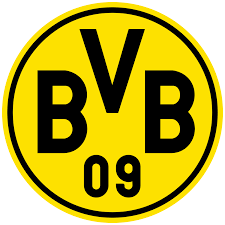

Borussia Dortmund

Ballspielverein Borussia 09 e.V. Dortmund, commonly known as Borussia Dortmund ,BVB, or simply Dortmund, is a German sports club based in Dortmund, North Rhine-Westphalia (Borussia is the Latin equivalent of Prussia). The football team is part of a large membership-based sports club with more than 145,000 members, making BVB the second largest sports club by membership in Germany. Dortmund plays in the Bundesliga, the top tier of the German football league system. Dortmund is one of the most successful clubs in German football history.
Borussia Dortmund was founded in 1909 by eighteen football players from Dortmund. Borussia Dortmund have won eight German championships, four DFB-Pokals, five DFL-Supercups, one UEFA Champions League, one UEFA Cup Winners' Cup, and one Intercontinental Cup. Their Cup Winners' Cup win in 1966 made them the first German club to win a European title.